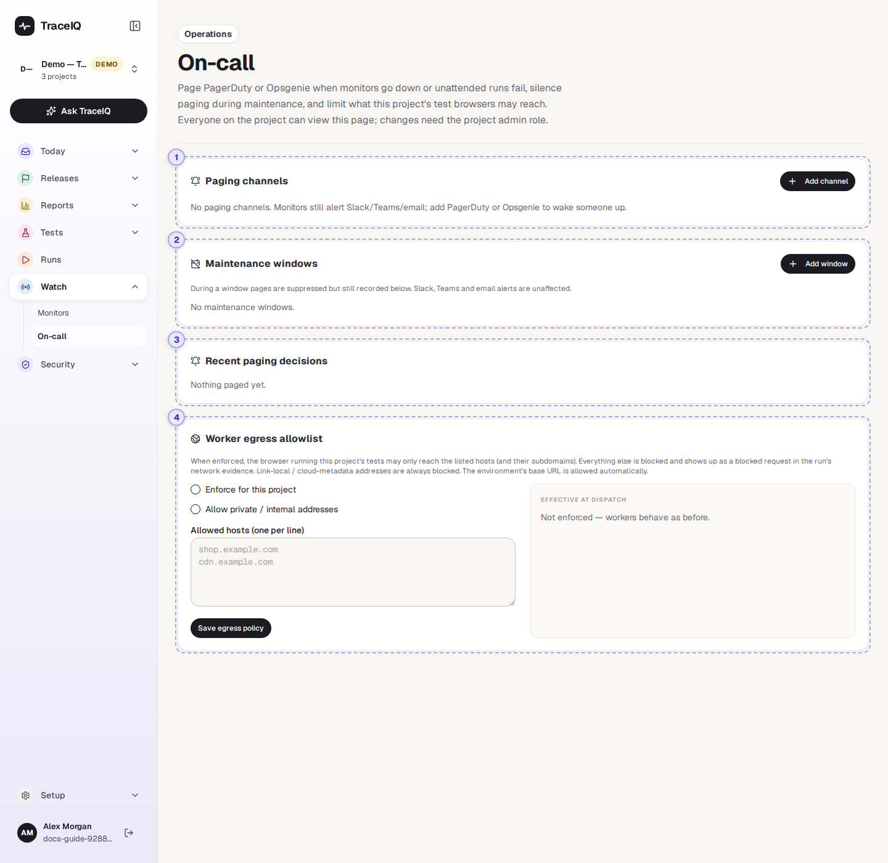
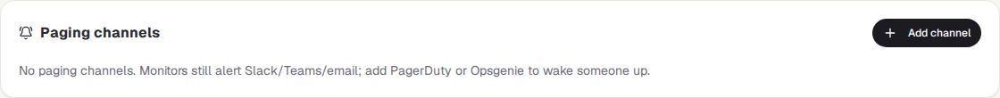
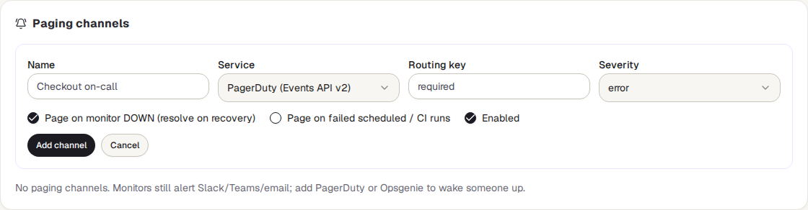
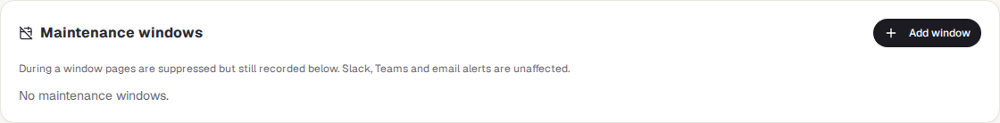
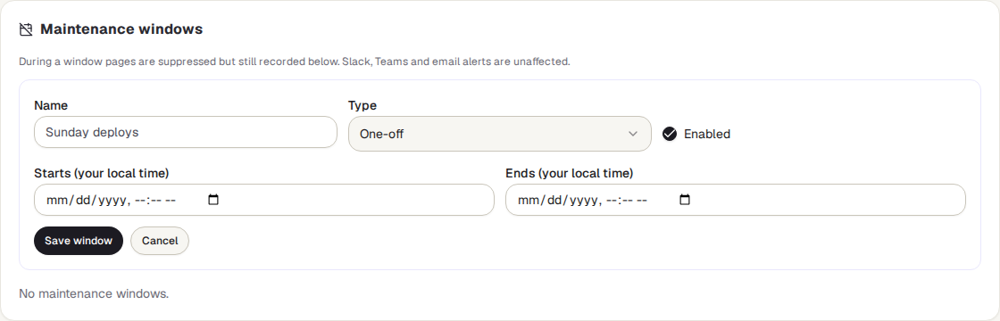
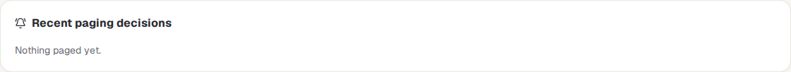
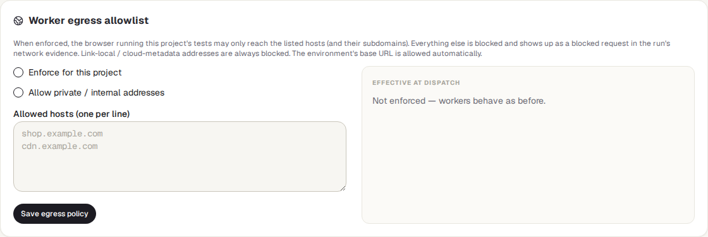

On-call
Who gets woken up, and when not. Here you connect a project to PagerDuty or Opsgenie so that a monitor going down pages whoever is on call, set quiet hours for planned maintenance, see every paging decision TraceIQ made, and limit which websites the project's test browsers may reach.
What it is for
On-call answers "If the live site breaks at 3 a.m., will the right person hear about it, and will nobody be woken for a planned outage?" A Slack message is easy to miss at night. PagerDuty and Opsgenie are services that phone or text the person on duty. TraceIQ opens an incident there when something breaks and closes it again when it recovers.
Operations
Connect the project to the on-call service, and test that the connection works.
Release managers
Set a maintenance window for a planned deploy, so nobody is paged for it.
Security and leads
Check why someone was, or wasn't, paged, and keep test browsers away from sites they shouldn't touch.
Where to find it: in the sidebar, open Watch → On-call.
A tour of the screen
The page shows the project selected at the top of the sidebar, in four cards. The numbers on the screenshot match the sections below. The demo workspace has no paging set up (a demo never pages anyone), so its cards are empty.

Paging channels

A channel is one connection to PagerDuty or Opsgenie. A project can have several, for example one per team. Add channel opens this form:

| Field | What to fill in |
|---|---|
| Name | Anything that tells people which channel it is, e.g. "Checkout on-call". |
| Service | PagerDuty or Opsgenie. For Opsgenie, also choose its region (US or EU), the one your Opsgenie account is in. |
| Routing key / API key | The key from PagerDuty or Opsgenie that lets TraceIQ open incidents. It is stored encrypted and never shown again; when editing, leave it empty to keep it. |
| Severity | How urgent the incidents are: critical, error, warning or info (in Opsgenie, priority P1 to P4). |
| Page on monitor DOWN | On by default. Opens an incident when a monitor goes down and closes it when the monitor recovers. |
| Page on failed scheduled / CI runs | Off by default. Opens an incident when a run started by a schedule, by your build pipeline (CI) or by a webhook fails, and closes it when the next run of the same suite or test passes. |
| Enabled | Untick to stop a channel paging without deleting it. |
Once there are channels, a table lists each one: what it pages on, when it last sent something (and the last error, if sending failed), and three buttons. Test opens a test incident ("TraceIQ test page — safe to ignore") and closes it again at once, so you know the key works. Edit and Delete do what they say.
Maintenance windows

A maintenance window is a time when TraceIQ must not page anyone, such as a planned deploy. During a window, pages are held back but still written to the list below, so you can see what would have happened. Slack, Teams and email alerts still go out.

- One-off: a start and an end, typed in your own local time.
- Weekly recurring: the days of the week, a from and until time, and a time zone (for example
Europe/Berlin; it starts as your browser's). An end earlier than the start runs past midnight, e.g. Friday 22:00 to Saturday 06:00. - A window that is in force right now is marked active now.
Recent paging decisions

The 50 newest decisions, one row per channel, newest first:
| Column | What it shows |
|---|---|
| When | The date and time, in your local time. |
| Source | monitor or run, with the run number. |
| Action | trigger (open an incident) or resolve (close it). |
| Dedup key | The name the incident goes by in PagerDuty or Opsgenie. A monitor that stays down keeps the same key, so it adds to one incident instead of opening a new one each time. |
| Outcome | sent, suppressed (held back by a maintenance window, which is named), or failed (with the reason, e.g. a wrong key). |
Worker egress allowlist

This card is about the test browsers, not about paging. When it is
enforced, the browser that runs this project's tests may only open the listed websites
(and their sub-addresses: example.com also allows shop.example.com).
Anything else is blocked, and shows up as a blocked request in the run's network
details. This keeps tests from reaching, for example, a live payment provider.
- Enforce for this project switches the list on.
- Allow private / internal addresses lets tests reach machines inside your own network. A server administrator can forbid that for everyone; the right-hand side then says it is capped.
- Allowed hosts: one website per line.
- Effective at dispatch, on the right, shows what the next run will actually use. The address of the environment a test runs against is always allowed, and the special addresses cloud servers use for their own settings are always blocked. A server administrator can also enforce the list for every project.
If the list is enforced and empty (apart from the environment's own address), every other request of the test browser is blocked. Live connections such as WebSockets are not checked by the list.
Watch it in use
How to…
…page the on-call person when a monitor goes down
- In PagerDuty (or Opsgenie), create an integration for TraceIQ and copy its routing key (or API key).
- Here, press Add channel, give it a name, choose the service and paste the key. Leave Page on monitor DOWN ticked.
- Press Add channel, then Test on its row. A test incident should appear and close in PagerDuty or Opsgenie.
…stop pages during a planned deploy
- Press Add window and give it a name, e.g. "Release 4.2".
- Keep One-off and type the start and end in your own time. For a regular slot, choose Weekly recurring instead.
- Press Save window. During it, decisions show as suppressed in the list below.
…find out why someone was, or wasn't, paged
- Look at Recent paging decisions for the time in question.
- suppressed names the maintenance window that held it back; failed gives the error from PagerDuty or Opsgenie.
- No row at all means nothing asked to page: check that the channel is enabled and set to page on monitors or runs.
Good to know
- Who can do what. Anyone with access to the project can look. Adding, editing, testing and deleting channels and windows, and saving the egress list, need the project's admin role (editor is not enough), because they decide who is woken up and what tests can reach. Every change is written to the audit log.
- Which runs page. Only runs started by a schedule, by CI or by a webhook. Runs started by a person, by an AI agent or on a developer's own computer never page; nor does a cancelled run. A run that hits TraceIQ's time limit pages like a failure. A monitor's checks page through the monitor setting, not this one.
- Recovery closes the same incident. When the monitor recovers, or the next run passes, TraceIQ closes exactly the incident it opened. If the page was held back by a maintenance window, nothing is closed, because nothing was opened.
- Pages go out on the change. A monitor pages once when it goes down, not on every failed check.
- Keys stay secret. A saved key is never shown again or written to the decision list.
- It updates by itself. The decisions refresh every 30 seconds and the windows every minute.
Related pages
Monitors
The tests on a timer whose ups and downs page the on-call person.
Scans & findings
The next part of this guide: security scans of your app and what they found.
Schedules
The timers behind monitors and scheduled runs.
Audit log
Who changed a channel, a window or the egress list, and when.